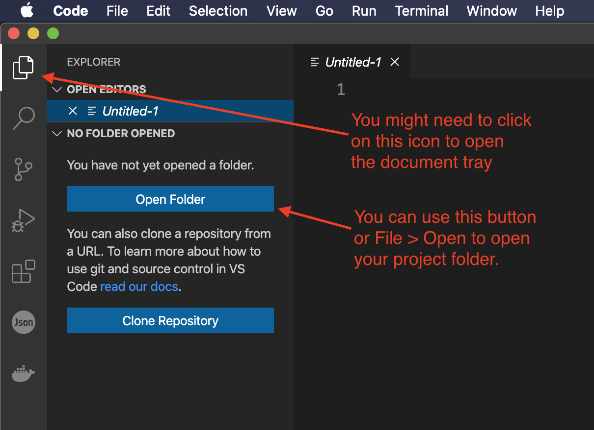
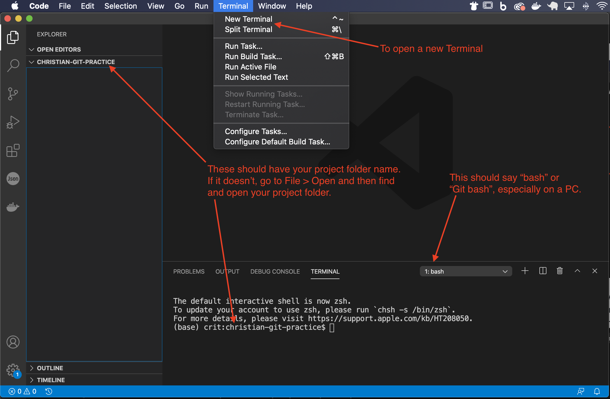
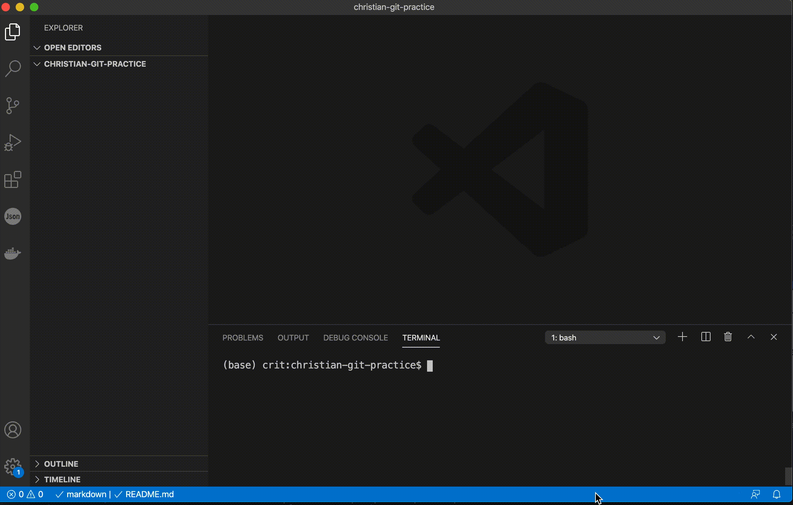

4 Project setup
This is something we’ll do time and again. Don’t just follow the steps blindly … learn and understand what you are doing so you can do this without thinking much about it.
In this section we’ll create a folder to hold all of our stuff, and some maintenance files we’ll need with every project.
4.1 Folders and files
- Use the Finder on your computer to locate your
Documents/icjfolder and inside of it create a new project folder calledyourname-git-practice. Always use all lower-case letters and dashes instead of space. It’s just good practice. - Launch Visual Studio Code and start a New window. (You can find it under the File menu, or use Command-option-n.)
- On the Welcome screen, you will see a link called Open folder. (If you don’t see this, click on the page icon at top-left, which is the Explorer menu.) Click on that Open Folder button and negotiate your way to your project folder, select it and click the Open button.

- Go to the Terminal menu and choose New Terminal. This will open a terminal window inside of VS Code, which is super handy. The top line of the terminal should give you the path to inside your project folder, like
~/Documents/icj/christian-git-practice. If it doesn’t then you didn’t open the folder first.

4.2 The README
Every coding project should have a special file called a README file which outlines what the project is and how to use it. It is often written in Markdown, which is a text-based syntax that Github turns into pretty HTML when it is published, but is completely readable as text. It also has great support to show code, tables, lists and such. Here is a cheatsheet of the syntax and 10-minute tutorial you may find useful. For what it is worth, this book is written using Markdown.
I want you to always have a README file with your projects, and it should always be called README.md. Yes, with capital letters for README and lower-case letters for .md. It breaks typical file naming conventions because it is special.
(I have a gif showing these steps below.)
- Create the file first. I would recommend using the Terminal inside VS Code to use the
touchcommand. (There are other ways, but let’s get used to usingtouch.)
touch README.mdThe file now appears in the file explorer in VS Code on the left.
- Click on the file name to open it.
- Now add a title, your name, the assignment name and when it is due. Like this:
# [YOURNAME]'s git practice
By [YOURNAME], Intro Coding for Journalists class
This repo is a class assignment to learn git. It is due [Month] [Day], [Year].
- Save and close the README file.
I want something like that on every project you make in this class: title, your name, the assignment and when it is due. Your projects early in the class won’t have an extensive README like some others, but I want you to be in the habit of using them.
4.3 Using gitignore
Your computer and the programs that run on it create all kinds of hidden files that you don’t normally see. When looking in folders with the VS Code explorer, you might see a Mac file called .DS_Store, which is a hidden file the computer creates when you view a folder. On Windows, you might see .Thumbs.db, which is a record of images saved in a folder. We often don’t want to save these files or others into our git history, so we create another hidden file called a .gitignore which contains the rules of what not to track. An easy way to write the rules is to use the website gitignore.io.
Creating hidden files like the .gitignore through the Mac/Windows regular file structure can be tricky, so it is best to do it from a terminal.
- In your Integrated Terminal in VS Code type this command:
touch .gitignoreYes, that file name starts with a period and there is NO file extension suffix, so no .txt or anything … it should be just .gitignore. Once created, it should show up in your list of files in VS Code on the left-hand screen.
- Go ahead and open the
.gitignorefile in VS Code by double-clicking on in the explorer. - Go to the website gitignore.io in a browser. Type in “VisualStudioCode” and choose it from the list. (Make sure it says “VisualStudioCode” and not just “VisualStudio”). Type in “macOS” and add it, then “Windows” and add it to the list. Always do both platforms to be nice for future collaborators. (If you were using other programs like MicrosoftOffice or languages like Python, you would add those as well.) Click the Create button.
- Copy all the code there and paste it into your
.gitignorefile and then save it. You can then close the file.
Here’s a short video showing that process: